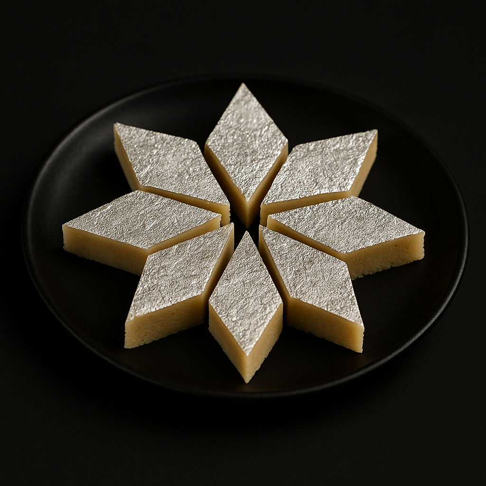

KajuKatli

Home
Description
Kaju Katli, also known as Kaju Barfi, is a classic Indian sweet made from cashew nuts and sugar syrup. Thin, diamond-shaped, and topped with silver leaf, it’s a symbol of luxury and celebration in Indian households.
Its smooth, melt-in-the-mouth texture comes from finely ground cashews mixed into a soft dough, lightly flavored with cardamom or rose water. Simple yet indulgent, it’s often the first sweet gifted during Diwali and other festivals.
Ingredients
- 1 cup cashew nuts
- ½ cup sugar
- ¼ cup water
- 1 tsp ghee
- ¼ tsp cardamom powder (optional)
Steps
- Grind cashew nuts into a fine powder (avoid over-grinding to prevent oil release).
- Make sugar syrup by boiling sugar and water until one-string consistency.
- Add cashew powder to syrup, mix on low flame until it forms a soft dough.
- Transfer to greased surface, roll thin with a greased rolling pin.
- Cut into diamond shapes, cool, and store in an airtight container.